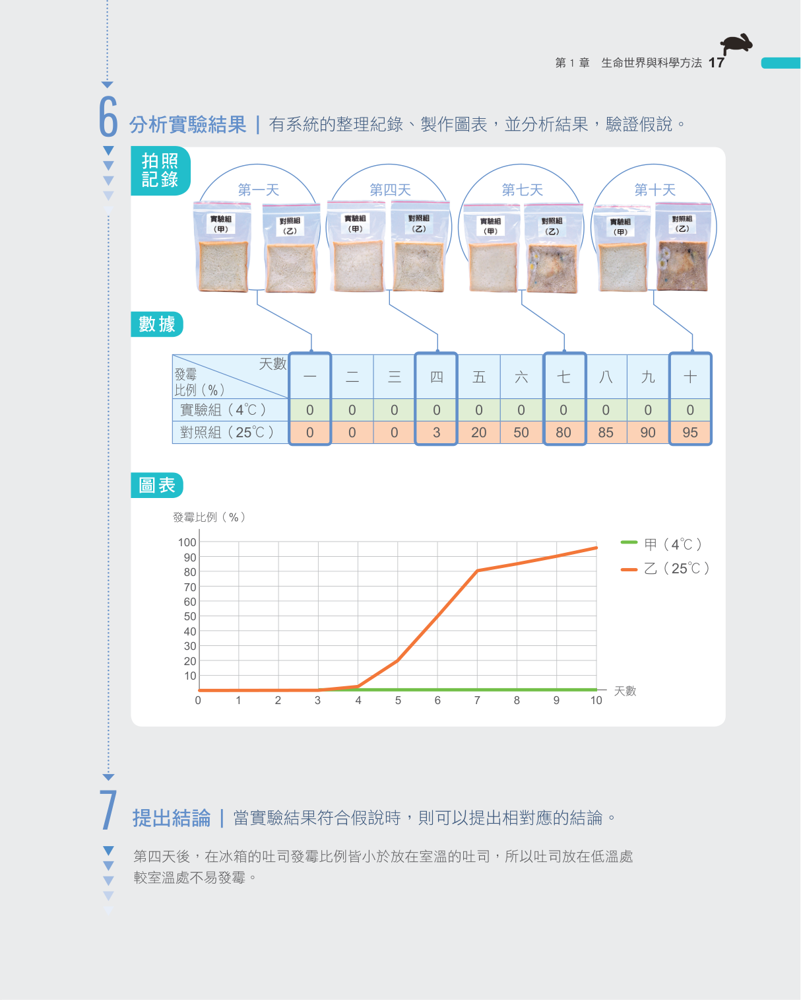
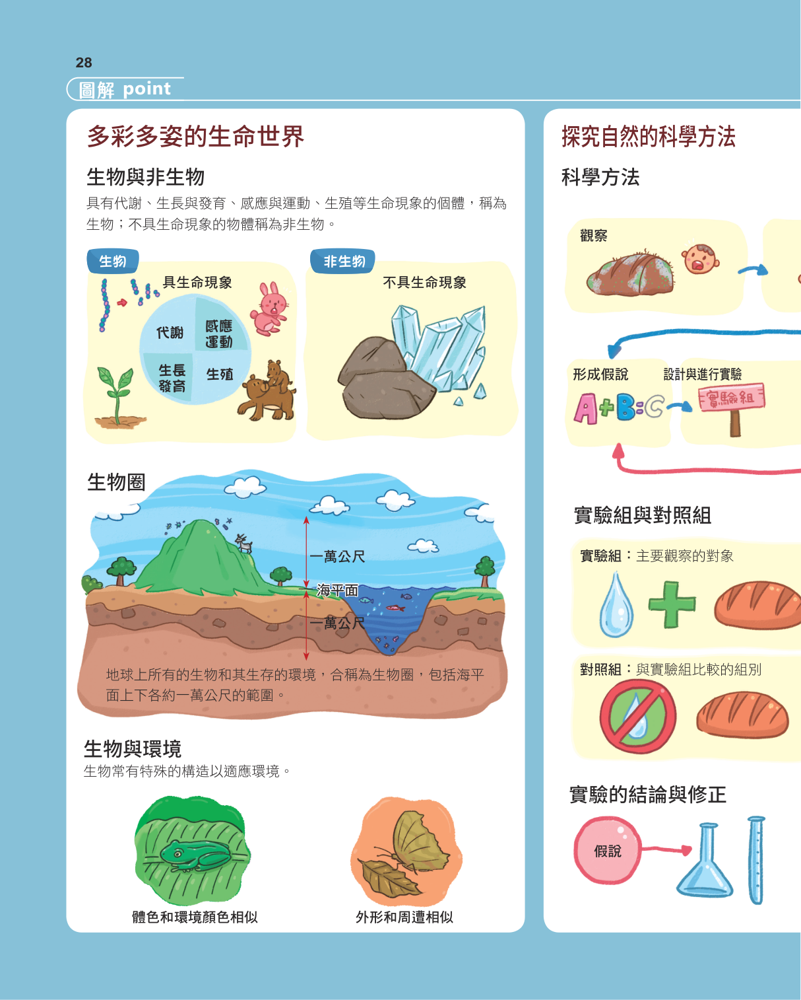
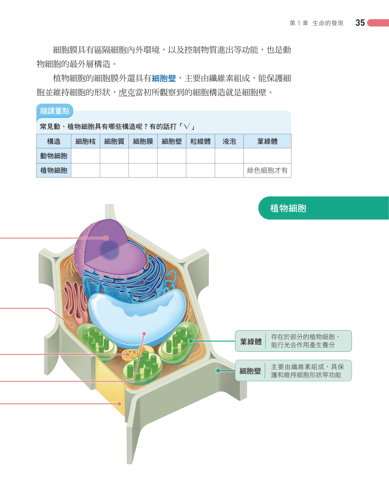
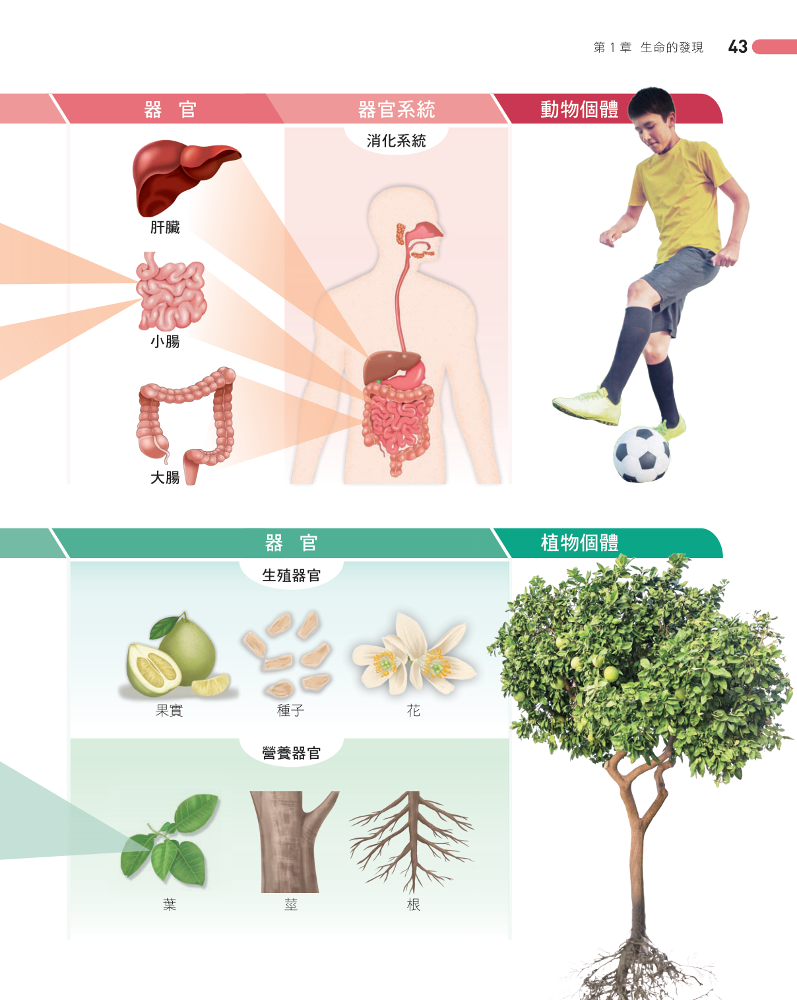

使用說明：重點筆記中的黃色「？」是關鍵字，點一下翻開答案、再點蓋回；每小節後有練習題，點選項即對答、可展開解析。對應的學生列印講義把「？」改成空格供作答。
1-1 科學的探索方法
科學方法一般包括觀察、提出問題、文獻探討、？、進行實驗、結果與討論、？等過程。
實驗中操縱特定變因以觀察其影響，此變因稱為？；其他保持不變的變因稱為？；隨操縱變因改變、實驗後要觀察的項目稱為？。
與假設相符的實驗處理稱為？，作為比對之用的稱為？，兩組之間只能有？項變因不同。
進行實驗時，多次重複相同的實驗可減少？，增加實驗結果的？。
若提出的結論具獨特見解並經重複驗證成立，就可以成為被廣泛接受的？。
顯微鏡的總放大倍率＝目鏡倍率×？，物鏡鏡頭越長，放大倍率越？。
「水量對米飯軟硬度的影響」實驗變因設定
| 變因種類 | 設定項目 |
|---|---|
| 操縱變因 | ？ |
| 控制變因 | 電鍋規格、加熱時間、米的品質與重量 |
| 應變變因 | ？ |
💡 💡實驗組與對照組只能相差？項變因，這樣才能確定結果的差異是由這個因素造成的。
💡 💡複式顯微鏡成像上下顛倒、左右相反；影像出現在右上方時，玻片要往？方移動才能移到視野中央。


✎ 小節練習
在「水量對米飯軟硬度的影響」實驗中，下列何者屬於應變變因？
A米飯的軟硬度
B水量
C加熱時間
D米的重量
【答案】A 應變變因是隨操縱變因改變、實驗後要觀察的項目；此實驗要觀察的是米飯的軟硬度。
設計實驗組與對照組時，兩組之間最多只能有幾項變因不同？
A1項
B2項
C3項
D沒有限制
【答案】A 兩組只能有一項變因不同，才能確定結果差異是由此因素造成。
複式顯微鏡目鏡為10倍、物鏡為40倍，其總放大倍率為多少？
A400倍
B50倍
C410倍
D4倍
【答案】A 總放大倍率＝目鏡倍率×物鏡倍率＝10×40＝400倍。
使用複式顯微鏡時，發現字母影像在視野的右上方，應將玻片往哪個方位移動才能移到中央？
A右上方
B左下方
C左上方
D右下方
【答案】A 複式顯微鏡成像上下顛倒、左右相反，影像在右上方時玻片要往同一側（右上）移動。
1-2 生命現象
能表現生命現象的物體稱為？，不能表現生命現象的物體稱為？，例如空氣、岩石、土壤及水。
生命現象是指生物體才能表現的？、生長與發育、？與運動及？等現象。
生物進行多種分解與合成反應以轉換能量並產生所需物質，這些反應統稱為？（簡稱代謝）。
生長是指個體的？增大，而發育是指生物的形態或功能逐漸？的過程。
感應是指生物能感知環境變化而產生適當反應，例如含羞草被觸碰時會？小葉。
繁殖是指生物體由？產生子代的過程，可增加個體數以延續族群。
生物維持生命現象大多需由環境獲得？、空氣、養分和水，其中陽光提供生物所必需的？。
💡 💡竹筍能展現所有生命現象，屬於？；石筍是礦物堆積而成，不是生物。
💡 💡病毒沒有細胞構造，必須寄生在其他生物的活細胞內才能繁殖，是介於生物與非生物之間的特例。

✎ 小節練習
下列何者「不是」生物所表現的生命現象？
A岩石因風化而崩解
B攝食後分解養分合成物質
C由親代產生子代
D感受刺激而產生反應
【答案】A 岩石風化崩解是物理化學變化，不是生命現象；代謝、繁殖、感應才是生命現象。
石筍與竹筍，何者屬於生物？
A竹筍
B石筍
C兩者都是
D兩者都不是
【答案】A 竹筍是植物，能表現生命現象，為生物；石筍是礦物堆積形成，不是生物。
生物進行分解與合成反應以轉換能量並產生所需物質，此生命現象稱為？
A代謝
B繁殖
C發育
D感應
【答案】A 分解與合成反應統稱新陳代謝，簡稱代謝。
1-3 細胞的發現與構造
300多年前，英國科學家？用顯微鏡觀察軟木塞切片，發現蜂窩狀小格子並將其命名為？。
後來的科學家歸納出？，認為細胞是組成生物體構造與功能的基本？。
細胞基本上大多由？、細胞核及？構成。
？是細胞的生命中樞，內含遺傳物質？，可以控制細胞的活動，失去它細胞將會死亡。
細胞質中的？可將養分轉化成能量供細胞使用；？內含水分並可儲存養分與廢物。
植物細胞的細胞膜外具有？，主要由？組成，能保護並支持植物體。
植物的綠色細胞中還具有？，可吸收光能進行？。
動物細胞與植物細胞構造比較
| 構造 | 動物細胞 | 植物細胞 |
|---|---|---|
| 細胞膜 | 有 | 有 |
| 細胞核 | 有 | 有 |
| 細胞質 | 有 | 有 |
| 粒線體 | 有 | 有 |
| 細胞壁 | ？ | ？ |
| 葉綠體 | 無 | ？ |
💡 💡動、植物細胞都有的構造：細胞膜、細胞核、細胞質、粒線體、液泡；植物細胞才有的是？和葉綠體。
💡 💡若細胞失去？，細胞將會死亡，因為它是控制細胞活動的生命中樞。


✎ 小節練習
最早使用顯微鏡觀察軟木塞切片並將小格子命名為「細胞」的科學家是誰？
A虎克
B許旺
C許來登
D達爾文
【答案】A 英國科學家虎克觀察軟木塞切片，發現蜂窩狀小格子並命名為細胞。
下列何者是植物細胞「有」而動物細胞「沒有」的構造？
A細胞壁
B細胞膜
C細胞核
D粒線體
【答案】A 細胞壁與葉綠體是植物細胞才有的構造；細胞膜、細胞核、粒線體則兩者都有。
內含遺傳物質DNA、被稱為細胞生命中樞的構造是？
A細胞核
B細胞質
C細胞膜
D液泡
【答案】A 細胞核內含DNA，是控制細胞活動的生命中樞。
植物綠色細胞中可吸收光能進行光合作用的構造是？
A葉綠體
B粒線體
C液泡
D細胞核
【答案】A 葉綠體可吸收光能行光合作用；粒線體則負責將養分轉化成能量。
1-4 細胞所需的物質與物質進出方式
細胞主要由水、醣類、？、脂質等分子組成，這些分子主要又由碳、氫、氧、？等原子構成。
多個葡萄糖分子可彼此相連形成？或纖維素；多個？分子可互相結合形成蛋白質。
較小的分子可藉由？透過細胞膜進出細胞。
擴散作用是指物質由？濃度區域往？濃度區域移動，最後均勻分布的現象。
氧氣和二氧化碳可以？通過細胞膜；葡萄糖、胺基酸和礦物質不能直接通過，需藉由細胞膜上特殊？的協助。
水通過細胞膜所進行的擴散作用，特稱為？。
紅血球放入濃食鹽水時會因脫水而？，放入清水時會膨脹甚至？；植物細胞因具有？，放入清水中雖膨脹但不至於破裂。
動物細胞（紅血球）在不同溶液中的滲透變化
| 溶液 | 水分進出 | 細胞變化 |
|---|---|---|
| 濃食鹽水 | 進水量＜出水量 | ？ |
| 生理食鹽水 | 進水量＝出水量 | 維持正常 |
| 清水 | 進水量＞出水量 | ？ |
💡 💡乾燥海帶芽泡水後，水分會？入細胞，使細胞因充水而膨脹。
💡 💡口訣：擴散是「所有小分子」由高濃度往低濃度移動；滲透則專指「水」通過細胞膜的擴散。


✎ 小節練習
擴散作用中，物質移動的方向為何？
A由高濃度往低濃度
B由低濃度往高濃度
C永遠由細胞外往細胞內
D永遠由細胞內往細胞外
【答案】A 擴散作用是物質由高濃度區域往低濃度區域移動，最後均勻分布。
水通過細胞膜所進行的擴散作用，特別稱為？
A滲透作用
B擴散作用
C光合作用
D呼吸作用
【答案】A 水通過細胞膜的擴散作用特稱為滲透作用。
將人體紅血球放入清水中，最可能發生的現象是？
A吸水膨脹甚至破裂
B脫水而萎縮
C維持正常形態
D完全沒有變化
【答案】A 清水濃度低，水會滲透入細胞，使紅血球膨脹甚至破裂。
下列何種物質可以「直接」通過細胞膜進出細胞？
A氧氣
B葡萄糖
C胺基酸
D礦物質
【答案】A 氧氣、二氧化碳可直接通過細胞膜；葡萄糖、胺基酸、礦物質需靠特殊蛋白質協助。
1-5 從細胞到個體
個體只由一個細胞構成就能表現所有生命現象的生物，稱為？，例如草履蟲、眼蟲。
由許多細胞組成的生物稱為？，需藉由各細胞間的？才能表現完整的生命現象。
構造或功能相似的細胞可形成？，數種不同的組織集合起來可組成具特定功能的？。
植物器官可分為根、莖、葉等？，以及花、果實、種子等？。
動物體中許多負責相關功能的器官，可聯合形成？，例如消化系統、呼吸系統。
動物的組成層次由小到大為：細胞→組織→器官→？→個體，而植物則沒有？這個層次。
動、植物體的組成層次比較
| 由小到大 | 動物 | 植物 |
|---|---|---|
| 最小 | 細胞 | 細胞 |
| ↓ | 組織 | 組織 |
| ↓ | 器官 | 器官 |
| ↓ | ？ | （無此層次） |
| 最大 | 個體 | 個體 |
💡 💡生物組成層次由小到大排列：細胞＜組織＜？＜器官系統＜個體。
💡 💡動、植物組成層次最大的差異在於植物沒有？這個層次。


✎ 小節練習
只由一個細胞構成就能表現所有生命現象的生物，稱為？
A單細胞生物
B多細胞生物
C非生物
D病毒
【答案】A 草履蟲、眼蟲等只由一個細胞就能表現所有生命現象，屬於單細胞生物。
動物體的組成層次，由小到大排列正確的是？
A細胞→組織→器官→器官系統→個體
B細胞→器官→組織→器官系統→個體
C組織→細胞→器官→個體→器官系統
D細胞→組織→器官系統→器官→個體
【答案】A 動物組成層次為細胞→組織→器官→器官系統→個體。
下列哪一個組成層次是植物體「沒有」的？
A器官系統
B組織
C器官
D細胞
【答案】A 植物沒有器官系統這個層次，其組成層次為細胞→組織→器官→個體。